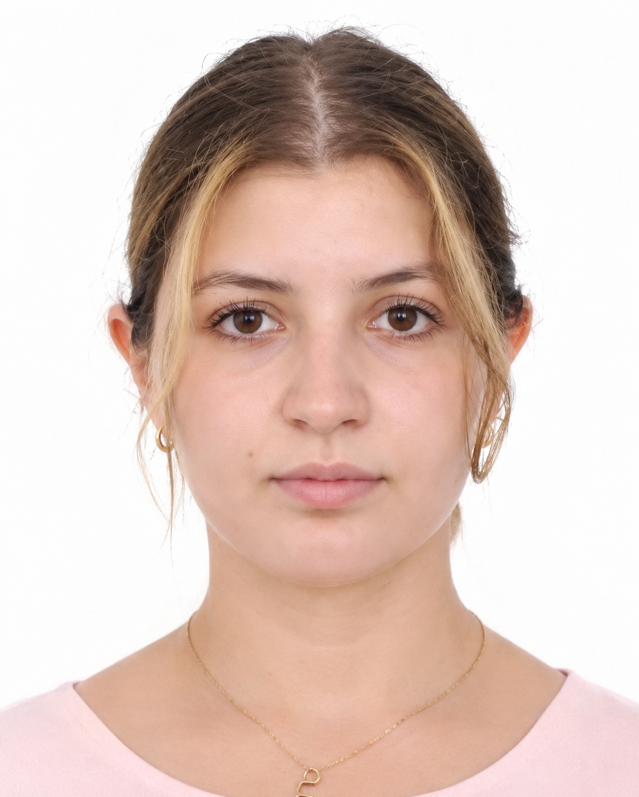

| Étudiante en Master 2 Ingénierie et Innovation en Images et Réseaux, parcours Réseaux, je recherche un stage à partir de mars 2027 en administration et ingénierie réseau, avec un intérêt pour la sécurité, la virtualisation et l'automatisation. |
| 2025 – Présent | Master Ingénierie et Innovation en Images et Réseaux | Université Sorbonne Paris Nord |
| 2022 – 2025 | Licence Sciences pour l'ingénieur | Université Sorbonne Paris Nord |
| 2020 – 2022 | Tronc commun Sciences et Technologie | Université Abderrahmane-Mira de Béjaïa |
| 2024 | Université Sorbonne Paris Nord | Stage interne — Licence Sciences pour l'Ingénieur | Simulation et conception de composants électroniques, notamment un convertisseur numérique-analogique (CNA). |
| 2026 | Développement d'une application web Java | Java, Jakarta EE, PostgreSQL, API REST |
| 2026 | Déploiement et administration de services réseau sous Linux | VirtualBox, Linux, DNS, Web, DHCP |
| 2026 | Analyse et évaluation de la qualité de service (QoS) des réseaux | GNS3, Wireshark, iperf3 |
| 2026 | Automatisation des tests de connectivité réseau avec Python | Python, Mininet, simulation de pannes, CSV |
| 2025 | Sécurisation d'un réseau multisite | Cisco Packet Tracer, Cisco ASA, ACL, NAT, VPN IPsec, DMZ |
| 2025 | Conception et configuration de réseaux locaux | Cisco Packet Tracer, routeurs, switches, RIP, OSPF |
| Réseaux et outils | Cisco Packet Tracer, Wireshark, GNS3, iperf3 |
| Programmation | Java, Python, HTML, CSS |
| Systèmes et virtualisation | Linux, Windows, VirtualBox, Docker |
| Organisation, esprit d'équipe, autonomie, rigueur, communication efficace, sens de l'analyse |
| Français | C2 |
| Anglais | B2 |
| Arabe | B2 |
| Kabyle | Langue maternelle |
| Danse, lecture, voyage |